How to use this guide
There are two tools. The Simulator lets you invent a classifier by choosing the distribution of its scores in each class, and then watch what the AUC does across many simulated studies. The Robustness lab takes one concrete dataset (yours, or an example) and shows how much each single observation contributes to the AUC and to the conclusion you draw from it.
Read Section 1 first if ROC curves are new to you, or skim it for the notation. Then work through the Simulator (Section 2) and the Robustness lab (Section 3) with the tool open in another tab. Green Try it boxes contain links that open the tool in exactly the state described; exercises have hidden answers you can reveal. Screenshots show the tools with their default random seeds, so if you follow along without changing the seed you should see the same numbers.
1. ROC curves and the AUC in one page
Scores, thresholds and the ROC curve
A binary classifier assigns each case a score s. Cases belong to one of two classes, which these tools call Y (positives: e.g. diseased, fraud, churn) and N (negatives). To make a decision we pick a threshold t and predict Y whenever s ≥ t. Every threshold gives two error rates:
TPR(t) = P(S ≥ t | Y) = sensitivity FPR(t) = P(S ≥ t | N) = 1 − specificityThe ROC curve plots TPR against FPR as t sweeps from +∞ (nobody is flagged: point (0, 0)) to −∞ (everybody is flagged: point (1, 1)). A useless score gives the diagonal; a perfect score goes straight up to (0, 1). The two score distributions P(score | Y) and P(score | N) completely determine the ROC curve.
The AUC is a probability
The area under the ROC curve has a concrete meaning: pick one Y case and one N case at random; the AUC is the probability that the Y case gets the higher score (ties count one half):
AUC = P(SY > SN) + ½ P(SY = SN)In a sample with nY Y cases and nN N cases this becomes the share of the nY · nN pairs that are correctly ordered. This is the Mann–Whitney statistic divided by nYnN, and it is exactly the area under the sample ROC curve.
For the classic binormal model, S | Y ~ Normal(μY, σY²) and S | N ~ Normal(μN, σN²), there is a closed form:
AUC = Φ( (μY − μN) / √(σY² + σN²) )so with μY = 1, μN = 0 and both SDs equal to 1, the AUC is Φ(1/√2) ≈ 0.760. What matters is the separation of the classes relative to their spread.
Population value vs. sample estimate
Keep two quantities apart. The true AUC is a property of the two score distributions: a population parameter. The sample AUC is what you compute from one finite study: an estimate with sampling error. Real studies only ever show you the second. The Simulator shows both, because you choose the distributions; the Robustness lab works with a sample, just as you do in practice.
What the AUC ignores
- Only ranks matter. Any strictly increasing transformation of the scores (log, cube, logistic…) leaves the AUC unchanged. So the AUC says nothing about calibration, i.e. whether a score of 0.8 really means an 80% risk.
- Prevalence is invisible. TPR and FPR are computed within each class, so the ROC curve and the AUC don't change when one class becomes rarer. Precision (PPV) does change, a lot.
- It averages over all thresholds, including thresholds nobody would use. Two classifiers with the same AUC can be very different in the region of the ROC curve that matters for a given application.
- It is an estimate. With few cases in one class, a single study's AUC can be far from the truth, and a few observations can carry a large share of the result.
Each of these points has a scenario in the Simulator or an example in the lab that lets you see it happen.
Colour code used by both tools
| Colour | Meaning |
|---|---|
| orange | Y cases (positives), and P(score | Y) |
| blue | N cases (negatives), and P(score | N) |
| purple, solid | quantities computed from the sample (sample ROC, sample AUC) |
| black, dashed | the truth (true ROC, true AUC): only known in simulations |
| magenta | the decision threshold and its operating point on the ROC curve |
| teal | DeLong confidence interval |
| light purple | bootstrap replicates and the bootstrap confidence interval |
2. The Simulator
The Simulator answers the question: if the scores of my classifier behaved like this, what AUC would a study see, how uncertain would it be, and what would the AUC fail to tell me?
2.1 A guided tour
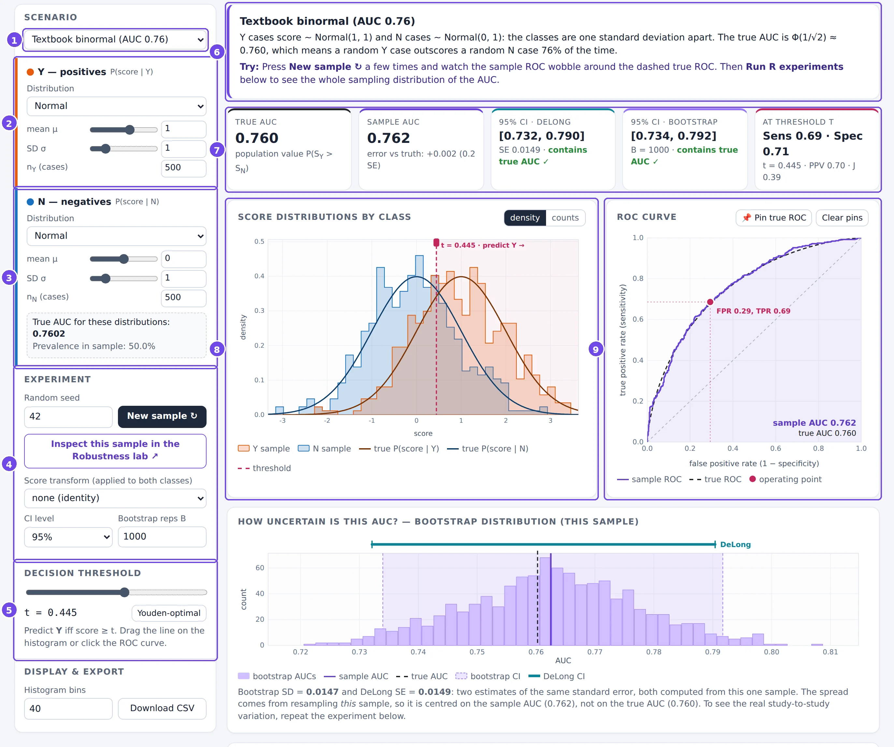
- Scenario. Ready-made experiments, each with a lesson. Choosing one sets all the controls below.
- Y: positives. The distribution P(score | Y): a family (Normal, Beta, Uniform, Gamma or a mixture of two normals), its parameters (slider or typed value) and the number of Y cases nY.
- N: negatives. The same for P(score | N). The dashed box underneath shows the true AUC implied by the two distributions. It is recomputed instantly as you move any slider.
- Experiment. The random seed and New sample ↻; a link that opens this exact sample in the Robustness lab; an optional score transform; the confidence level; and the number of bootstrap replicates.
- Decision threshold. The threshold t used for the confusion matrix and the operating point. The Youden-optimal button picks the threshold that maximises sensitivity + specificity − 1 in this sample.
- Lesson. What the current scenario is meant to show, and what to try.
- Summary boxes. True AUC, sample AUC, two confidence intervals and the metrics at the threshold (§2.5).
- Score distributions of the sample, with the true densities (§2.3).
- ROC curve of the sample, with the true ROC curve (§2.4).
Below these, the page continues with the bootstrap panel (§2.6), the repeated experiments (§2.7), the confusion matrix and the pair game (§2.8), and a Methods & formulas section.
2.2 Setting up an experiment
An experiment is defined by two distributions and two sample sizes. Some guidance on the families:
- Normal: the reference case. Unequal SDs already produce interesting, asymmetric ROC curves.
- Beta: scores confined to [0, 1], like predicted probabilities.
- Gamma: positive, right-skewed scores, like many lab measurements.
- Uniform: flat distributions with hard limits; useful for exact hand calculations.
- Mixture of two normals: a class made of two subgroups, for example a disease with a subtype the classifier can't see.
The seed fixes the random numbers. While you move a parameter the seed stays the same, so the underlying random draws stay the same too: the sample changes only because of the parameter. (Statisticians call this using common random numbers.) Pressing New sample ↻ draws new random numbers from the same distributions: that is the noise you would see between two real studies.
Slide a parameter and the sample AUC changes smoothly: that is the effect of the parameter. Press New sample and it jumps: that is sampling variability. Telling these two apart is the whole point of the tool.
2.3 Reading the score distributions
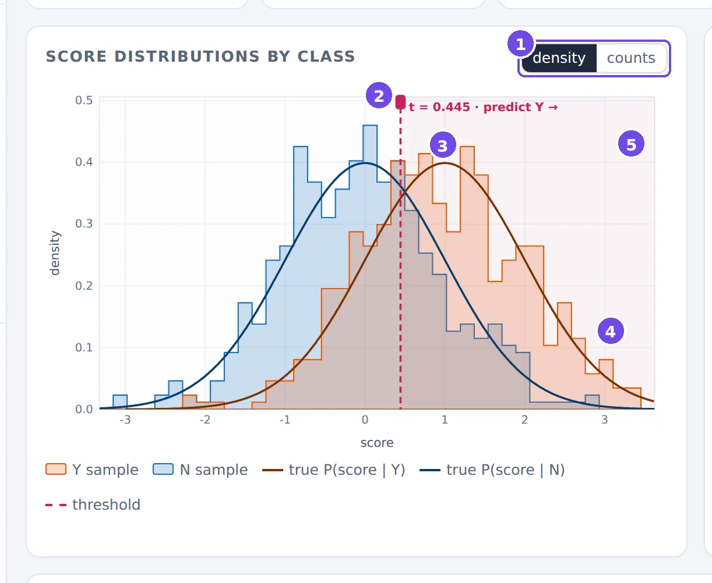
- density / counts. In density mode each class is scaled to area 1, which compares shapes. In counts mode you see the actual numbers of cases, which is how you notice class imbalance.
- The threshold. Drag the line (or its handle) left and right. Everything to its right is predicted Y.
- True densities. The smooth curves are the distributions you chose; the step outlines are the sample. The gap between them is sampling noise.
- Sample histograms of the Y scores (orange) and N scores (blue).
- Predicted Y region (lightly shaded). Y cases in it are true positives; N cases in it are false positives.
What to look at. The overlap of the two distributions is what limits classification: in the overlap region no threshold can separate the classes. The AUC is a summary of the overlap, but not of its shape: a long left tail of the Y scores and a long right tail of the N scores can give the same AUC with very different consequences. When you move the threshold, watch the operating point move on the ROC curve at the same time.
2.4 Reading the ROC curve
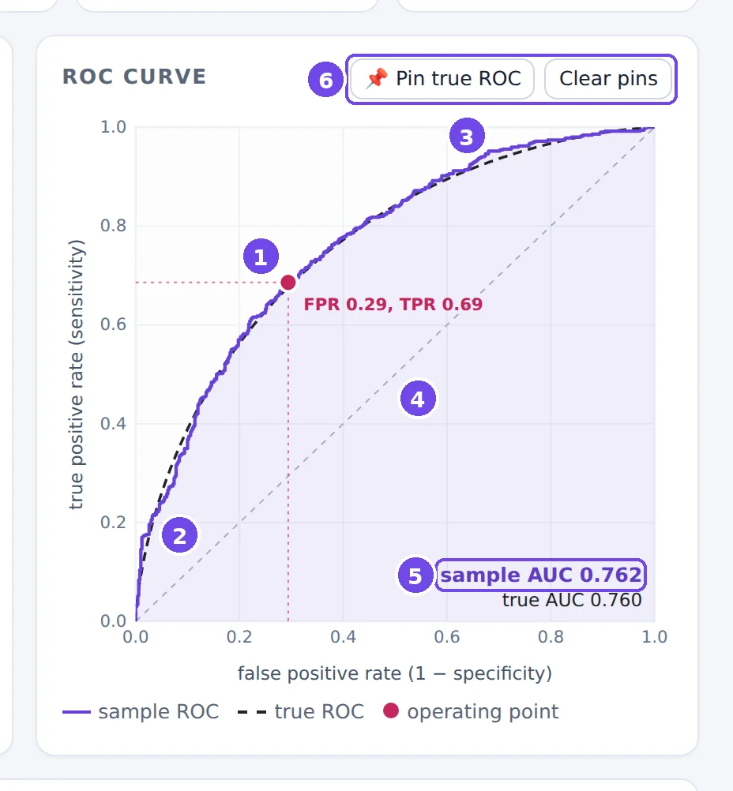
- Operating point: (FPR, TPR) at the current threshold, with dotted guides to the axes. Click anywhere near the curve to move the threshold to that point.
- Sample ROC. A staircase: every Y case is a step up of 1/nY, every N case a step right of 1/nN. The shaded area under it is the sample AUC.
- True ROC, computed from the distributions. The sample curve fluctuates around it.
- Chance diagonal. A score unrelated to the class has a ROC curve near this line and an AUC near 0.5.
- Sample AUC and true AUC, as numbers.
- Pin true ROC keeps the current true ROC curve on the plot (dashed, coloured) so you can compare it with other settings; Clear pins removes them.
What to look at. The shape. A curve that rises steeply at the left is good at low false-positive rates (screening with few false alarms); a curve that is good only in the top-right corner is good at catching almost all Y cases at the price of many false alarms. The AUC weights all parts of the curve equally. After you run repeated experiments (§2.7), faint purple curves show the ROC curves of other simulated studies (Figure 7).
2.5 The summary boxes and the two confidence intervals
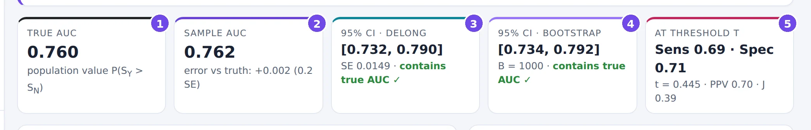
- True AUC of the chosen distributions.
- Sample AUC and its error, also expressed in standard errors (SE). An error of 0.2 SE is unremarkable; 2 SE or more happens in roughly 1 study in 20.
- DeLong CI. An analytic interval based on the DeLong variance estimate, built on the logit scale so that it stays inside (0, 1).
- Bootstrap CI. A resampling interval (§2.6); its progress is shown while it is being computed.
- At threshold t. Sensitivity, specificity, PPV and Youden's J at the current threshold.
The ✓ / ✗ under each interval says whether it contains the true AUC. In a real study you never get to see this mark: a 95% interval is a procedure that is right in about 95% of studies, and you don't know whether yours is one of them. §2.7 lets you check the “95%”.
2.6 The bootstrap panel
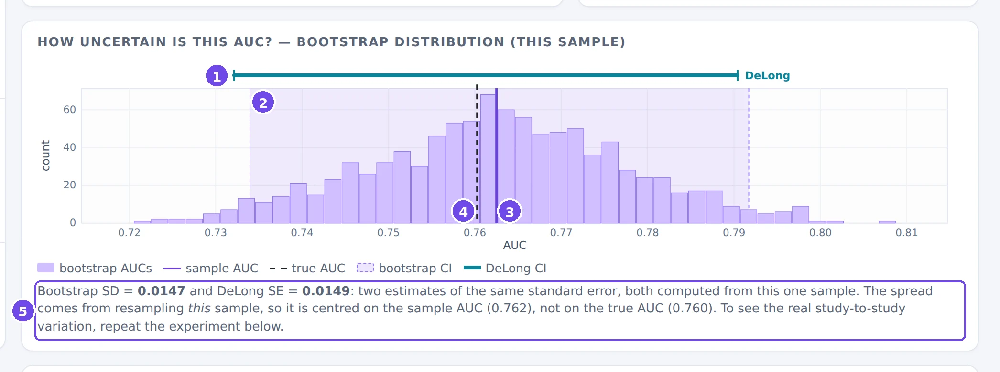
- DeLong CI (teal bar).
- Bootstrap percentile CI: the shaded band between the 2.5% and 97.5% quantiles of the bootstrap AUCs.
- Sample AUC (purple line).
- True AUC (dashed line).
- The bootstrap SD compared with the DeLong SE.
The bootstrap imitates “drawing a new study” by resampling this study: it draws nY Y cases and nN N cases with replacement (each class separately, so the class sizes stay fixed) and recomputes the AUC, B times. Two things to notice:
- The bootstrap SD and the DeLong SE are two estimates of the same standard error. With 500 cases per class they agree closely (0.0147 vs 0.0149 here); with small classes they can differ.
- The bootstrap distribution is centred on the sample AUC, not on the truth. Resampling can't tell you where the truth is; it can only estimate how much the AUC would wobble.
2.7 Repeating the experiment
This is the most important panel for understanding uncertainty. It reruns the same study R times (same distributions, same sample sizes, new random numbers) and records every study's AUC and confidence interval.
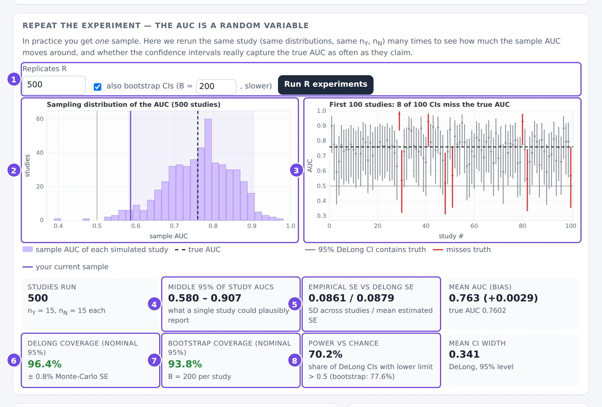
- Controls: the number of studies R, and whether to compute bootstrap CIs too (slower). The run shows its progress and can be cancelled.
- Sampling distribution of the AUC: one bar per bin of study results, the true AUC (dashed) and your current sample (purple). The shaded band holds the middle 95% of the studies.
- The first 100 confidence intervals, one vertical segment per study. Intervals that miss the true AUC (horizontal dashed line) are red.
- Middle 95% of study AUCs: the range of results a single study of this size could plausibly report.
- Empirical SE vs DeLong SE: the real study-to-study SD of the AUC, next to the average SE that DeLong's formula estimates from one study. If they agree, the formula is doing its job.
- DeLong coverage: the share of intervals that contain the true AUC, with its Monte-Carlo standard error. It should be close to the nominal level (green); a clear shortfall is shown in red.
- Bootstrap coverage: the same for the bootstrap intervals.
- Power vs chance: the share of studies whose interval lies entirely above 0.5, i.e. that would conclude “better than chance”.
With 15 cases per class, single studies ranged from 0.58 to 0.91 (middle 95%), while the truth is 0.76. The intervals are wide (0.34 on average) and DeLong's covered the truth in 96% of studies. 30% of these studies would not even have shown that a classifier with a true AUC of 0.76 beats chance.
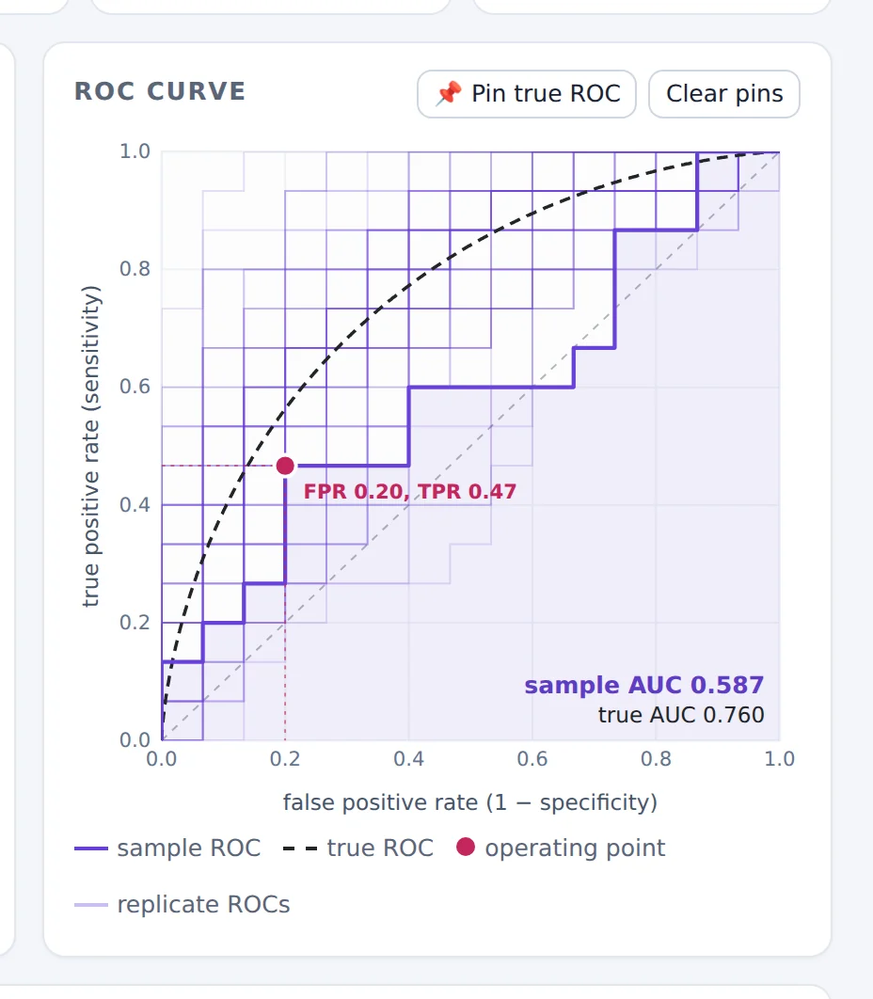
A confidence level is a property of the procedure, not of one interval. “95%” means: if the study were repeated many times, about 95% of the intervals would contain the true AUC. The repeated-experiment panel lets you count.
Changing any setting of the experiment clears these results, because they no longer describe the current experiment.
2.8 Threshold metrics and the pair game
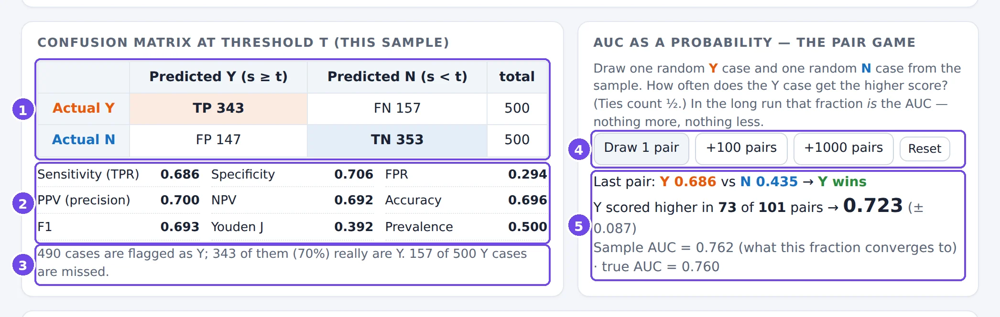
- Confusion matrix at threshold t: true positives, false negatives, false positives and true negatives.
- Metrics derived from it. Sensitivity, specificity and FPR are computed within each class; PPV, NPV and accuracy mix the classes and therefore depend on the prevalence.
- The same information in words.
- Pair game: draw random (Y, N) pairs from the sample, one or many at a time.
- The running share of pairs won by the Y case, next to the sample AUC it converges to.
The last drawn pair is marked on the histogram, so you can see which two scores were compared:
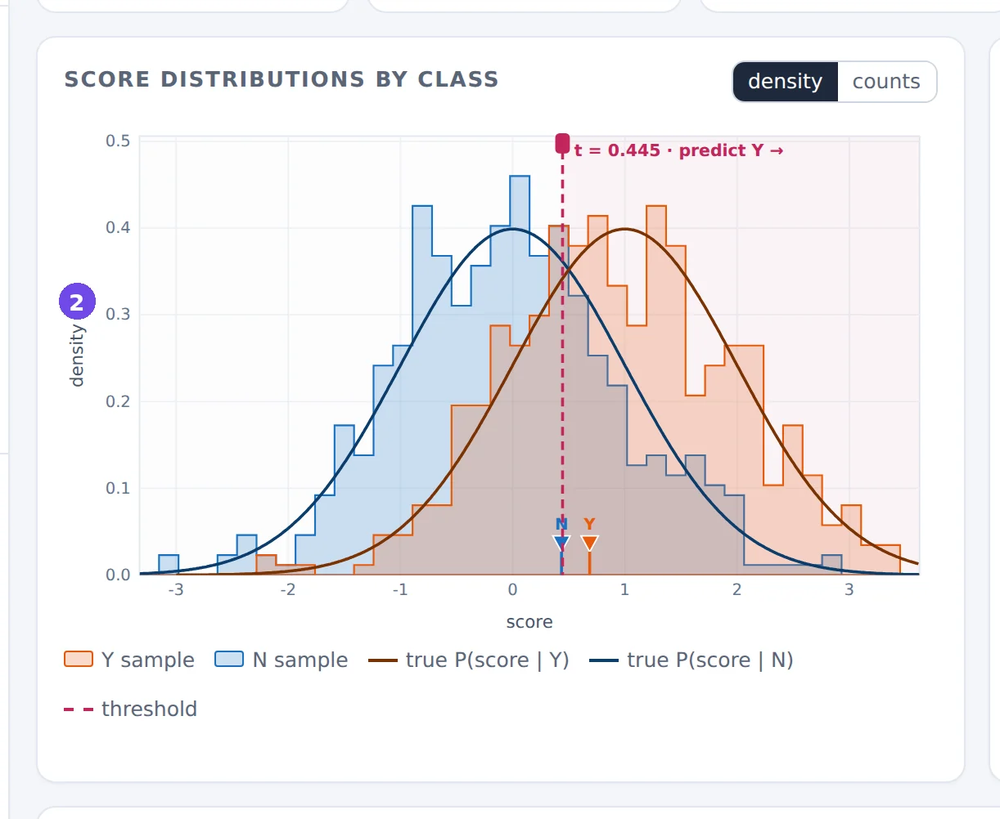
- The Y case of the last pair.
- The N case of the last pair. Here the N case scored higher, so the Y case lost this pair.
2.9 The guided scenarios
Each scenario is a small experiment about one property of the AUC. Open it, read the lesson box, then do what it suggests.
| Scenario | Setting | What it shows | |
|---|---|---|---|
| Textbook binormal | N(1, 1) vs N(0, 1), 500 + 500 | the basic picture: truth vs sample | open ↗ |
| Same AUC, different classifier | N(1.90, 2.5²) vs N(0, 1) | the same AUC with a different ROC shape | open ↗ |
| Hidden subgroup | 46% of Y look like N | the same AUC, but part of the Y class is undetectable | open ↗ |
| Rare positives | 50 Y vs 5,000 N | the AUC ignores prevalence; PPV doesn't | open ↗ |
| Small study | 15 + 15 cases | sampling variability and CI coverage | open ↗ |
| Barely better than chance | true AUC 0.528 | power, and “significant” vs useful | open ↗ |
| Only the ranking matters | Beta scores + transforms | rank invariance; calibration is invisible | open ↗ |
Same AUC, different classifier
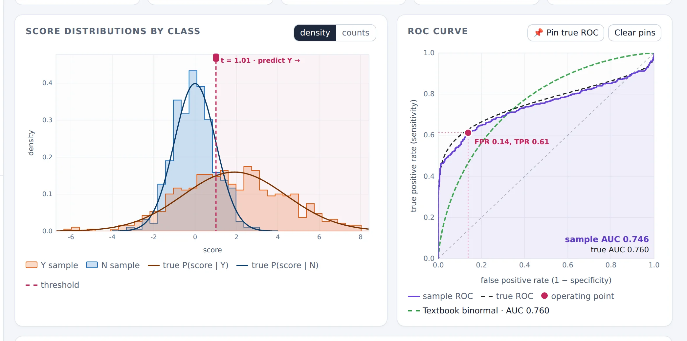
The wide Y distribution has cases far above every N case (so the curve rises steeply at the left: at FPR = 1% the TPR is about 43%, against about 9% for the textbook classifier) and cases far below every N case (so in the top-right corner the curve falls below the diagonal). The two classifiers have the same AUC but suit very different purposes.
Hidden subgroup
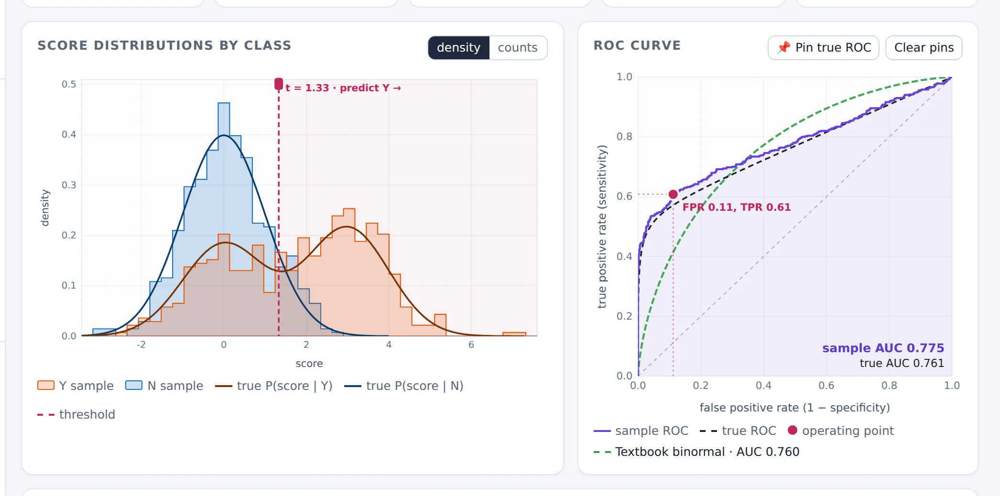
The ROC curve climbs steeply to a TPR of about 0.54 and then runs parallel to the diagonal: the easy Y cases are found at once, and the hidden subgroup can't be found by any threshold. The single AUC number gives no hint of this.
Rare positives
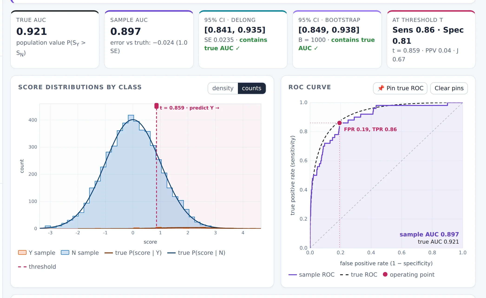
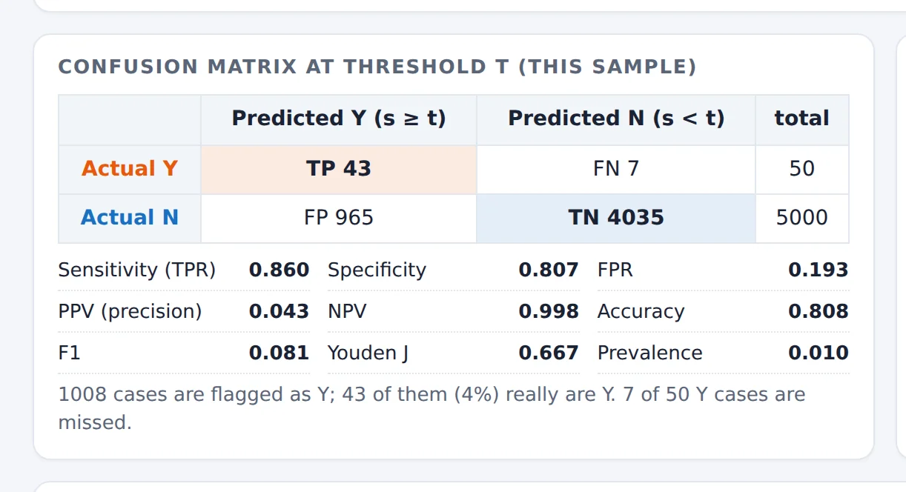
The AUC (about 0.9) describes how well the score separates the classes; it doesn't tell you what a positive prediction is worth. With a prevalence of 1% even a good sensitivity and specificity leave most flagged cases as false alarms. The confidence interval is also wider than the total of 5,050 cases suggests: its width is driven by the 50 Y cases.
Only the ranking matters
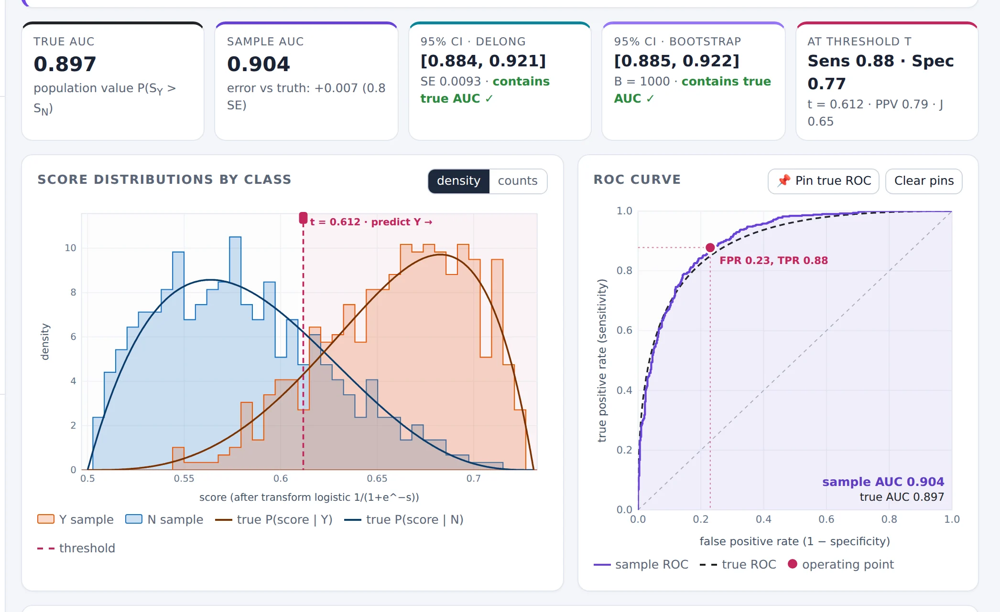
A transform that keeps the order of the scores keeps every pairwise comparison, hence the AUC. Calibration (whether the score values mean what they claim) needs other tools, such as calibration plots or the Brier score. The transform −s reverses every comparison and gives 1 − AUC.
Barely better than chance
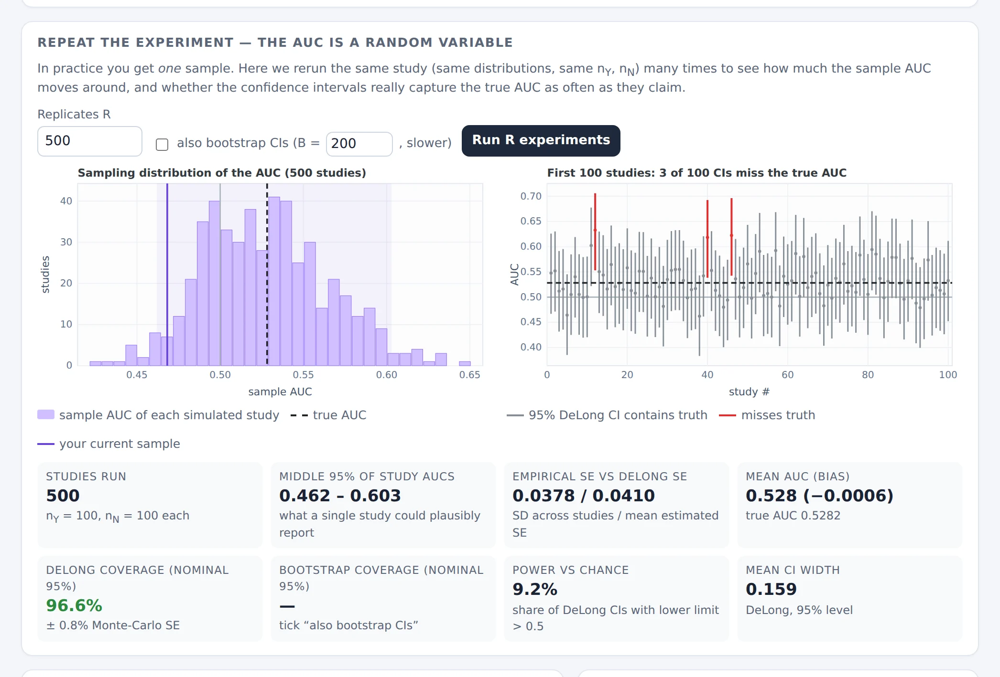
Only about 1 study in 11 concludes “better than chance”, and some studies even find an AUC below 0.5. With thousands of cases per class (try it) almost every study becomes “significant”, although the classifier is nearly useless. Statistical significance answers “is the AUC above 0.5?”, not “is the classifier good enough?”.
2.10 Exercises
Y ~ N(2, 1) and N ~ N(0, 1). Compute the true AUC by hand. Then double both SDs to 2: what happens? Check both in the Simulator.
Answer
Φ(2/√2) = Φ(1.41) ≈ 0.921. With both SDs equal to 2: Φ(2/√8) = Φ(0.71) ≈ 0.760. The same shift of the mean is worth much less when the scores are noisier: the AUC depends on separation relative to spread.
In the textbook scenario, slowly move the Y mean from 1.0 to 1.2. Note the sample AUC at each step. Then go back to 1.0 and press New sample ↻ five times. Which changes are larger, and why does the first series change so smoothly?
Answer
Moving the mean to 1.2 raises the true AUC from 0.760 to Φ(1.2/√2) ≈ 0.802, and the sample AUC follows smoothly because the seed, and hence the underlying random numbers, don't change. New samples move the AUC by roughly ±0.015 (one SE with 500 per class) at random. Small parameter changes can be smaller than the study-to-study noise.
In the textbook scenario, run 500 experiments with 500 cases per class and note the middle-95% range of the AUC. How many cases per class would you need for that range to be about 0.10 wide? Check your guess.
Answer
With 500 per class the SE is about 0.015, so the range is about 4 × 0.015 = 0.06 wide. The SE shrinks like 1/√n, so a width of 0.10 (SE ≈ 0.025) needs about 500 × (0.015/0.025)² ≈ 180 cases per class. (In unbalanced designs, the smaller class matters most.)
Keep N ~ N(0, 1) and give the Y class an SD of 2. Which Y mean gives the textbook AUC of 0.760? Pin both ROC curves. Where do they cross?
Answer
You need (μY − 0)/√(2² + 1) = 1/√2, so μY = √5/√2 ≈ 1.58. The wider curve is better at low FPR and worse at high FPR; the curves cross once, at FPR ≈ 0.34.
A test has sensitivity 0.80 and specificity 0.90. What is its PPV at a prevalence of 1%? And at 50%? Check with the Rare positives scenario (move the threshold until sensitivity ≈ 0.80).
Answer
PPV = sens·π / (sens·π + (1 − spec)(1 − π)). At π = 0.01: 0.008 / (0.008 + 0.099) ≈ 0.075. At π = 0.5: 0.40 / 0.45 ≈ 0.89. The ROC curve and the AUC are the same in both cases.
Open the Small study scenario and tick “also bootstrap CIs”. Run 500 experiments. Compare the two coverages with the nominal 95%. Then set nY = 8 and nN = 8, and a Y mean of 2 (a true AUC of 0.92). What happens to the coverage, and why?
Answer
With 15 per class both methods are close to 95%. With 8 per class and a true AUC of 0.92, about one sample in six reaches an AUC of exactly 1 (perfect separation). Its DeLong SE is 0 and its interval collapses to the point 1 (shown as “degenerate”), which can't contain the true 0.92; the bootstrap has the same problem. Coverage drops to around 80%. Large-sample intervals are least reliable exactly where small studies tend to land: near the boundary.
After 100 pairs in the pair game, how far from the sample AUC can the running share reasonably be?
Answer
Each pair is a Bernoulli trial with p ≈ AUC. With p = 0.76 the SE after 100 pairs is √(0.76 × 0.24/100) ≈ 0.043, so ±0.08 is typical at 95%. The sample AUC uses all nY·nN pairs, which is why it is far more precise than a few random pairs.
3. The Robustness lab
The Robustness lab answers a practical worry: “some of my observations look dubious. How much does my AUC, and my conclusion, depend on them?” It shows the exact effect of every single observation, lets you move, remove or relabel cases, and compares your edits with what the most influential edits could do.
3.1 How one case moves the AUC
Give each case a placement value V: for a Y case, the share of N cases scored below it; for an N case, the share of Y cases scored above it (ties count ½). V is the share of the other class that the case is correctly ordered against. The AUC is the average placement value within either class. Three consequences follow, and everything in the lab builds on them:
- Removing a case changes the AUC by exactly ΔAUC = (AUC − V) / (n − 1) where n is the size of the case's own class. A badly ranked case (V much lower than the AUC) pulls the AUC down; removing it raises the AUC.
- Leverage is set by class size. Moving one case's score from the bottom to the top of the ranking changes the AUC by exactly 1/n. With 15 Y cases and 400 N cases, one Y case can move the AUC by up to 0.067, one N case by at most 0.0025. In unbalanced data the small class carries the fragility.
- The same placement values give the DeLong standard error (their variance within each class). So the lab can also say exactly how the confidence interval, and therefore the conclusion, would change if a case were removed.
An observation is influential because of where it sits in the ranking and how small its class is, not because it looks odd on a plot. A visually extreme case in a large class can matter less than an unremarkable case in a small class.
3.2 A guided tour
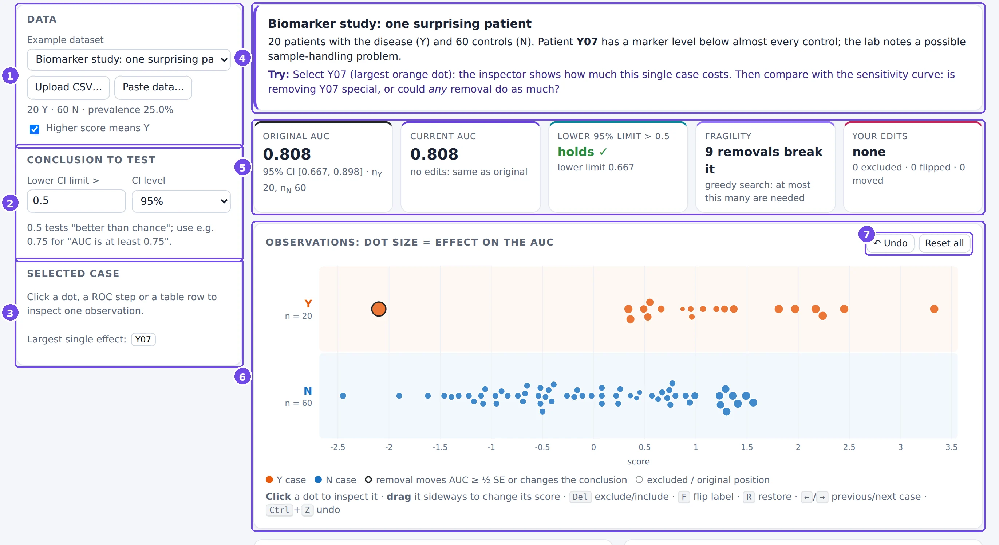
- Data: choose an example, upload a CSV, or paste data (§3.3).
- Conclusion to test: the claim whose robustness you are checking, “the lower CI limit is above c₀”, and the CI level. c₀ = 0.5 tests “better than chance”; use e.g. 0.75 to test “the AUC is at least 0.75”.
- Selected case: the inspector (§3.5). Until you select a case, it points to the case with the largest effect.
- About this dataset: the story of the example and what to try.
- Summary boxes: original AUC, current AUC, whether the conclusion holds, fragility, and your edits.
- Observations plot (§3.4).
- Undo the last edit or Reset all edits.
Further down: the ROC staircase, the sensitivity curve, a table of all observations, the edit log, and Methods & formulas.
3.3 Loading data
The examples are a good place to start. To analyse your own data, prepare a table with one row per case and at least a score column and a label column, for example:
id,label,score
P001,Y,0.91
P002,N,0.35
P003,N,0.62
…Upload it as a file or paste it into the text box. The lab detects the separator (comma, semicolon, tab, | or spaces), a header
row, quoted fields and decimal commas (0,83), and guesses the columns; you can correct every guess.
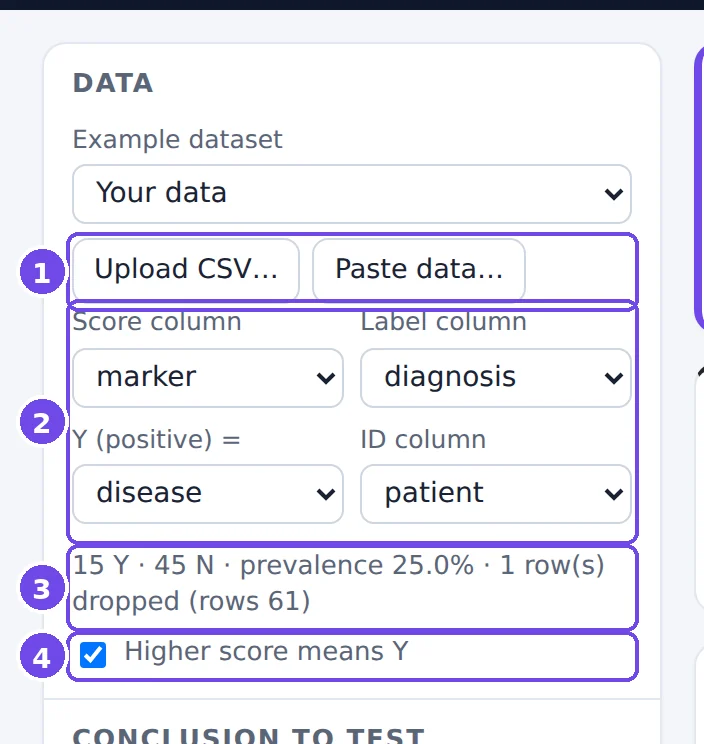
patient;diagnosis;marker.- Upload CSV… / Paste data…
- Column mapping: which column holds the score, which the label, which label value means Y (all other values count as N), and an optional ID column. Changing the mapping reloads the data and clears your edits.
- Data summary: class sizes, prevalence, and rows dropped because of a missing label or score.
- Higher score means Y. Untick it if low scores indicate Y (for instance, a marker that drops in disease). The lab also warns you when the AUC comes out below 0.5, which often means this box is set the wrong way.
Nothing is uploaded to a server: all computations run in your browser.
3.4 The observations plot
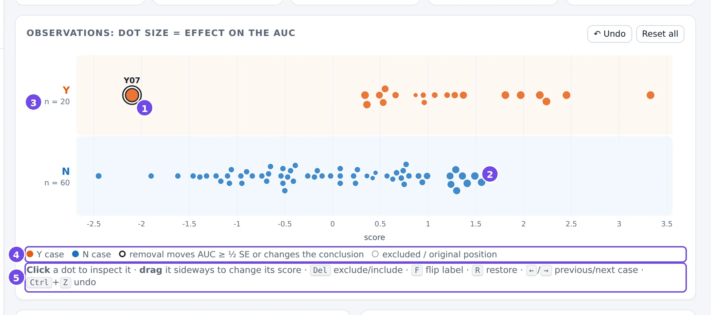
- Y07: a Y case scored below almost every N case. It is the largest dot: removing it would change the AUC more than removing any other case. The black outline marks cases whose removal moves the AUC by at least ½ SE, or would change the conclusion.
- The N cases with the largest effect are those scored highest: they outrank many Y cases. They are still small dots, because each N case is only 1 of 60.
- Row labels with the current class sizes.
- Legend. Excluded cases become hollow dashed circles, and edited cases leave a grey ghost at their original position.
- How to interact: click a dot to inspect it; drag it sideways to change its score; keyboard shortcuts for the selected case.
Dot size shows the size of a case's effect, not its direction. The direction is in the inspector and the table. In a class with more than 300 cases the lab draws the class as a density band and shows only its 40 most influential cases as dots (see §3.10, Figure 28).
3.5 The inspector
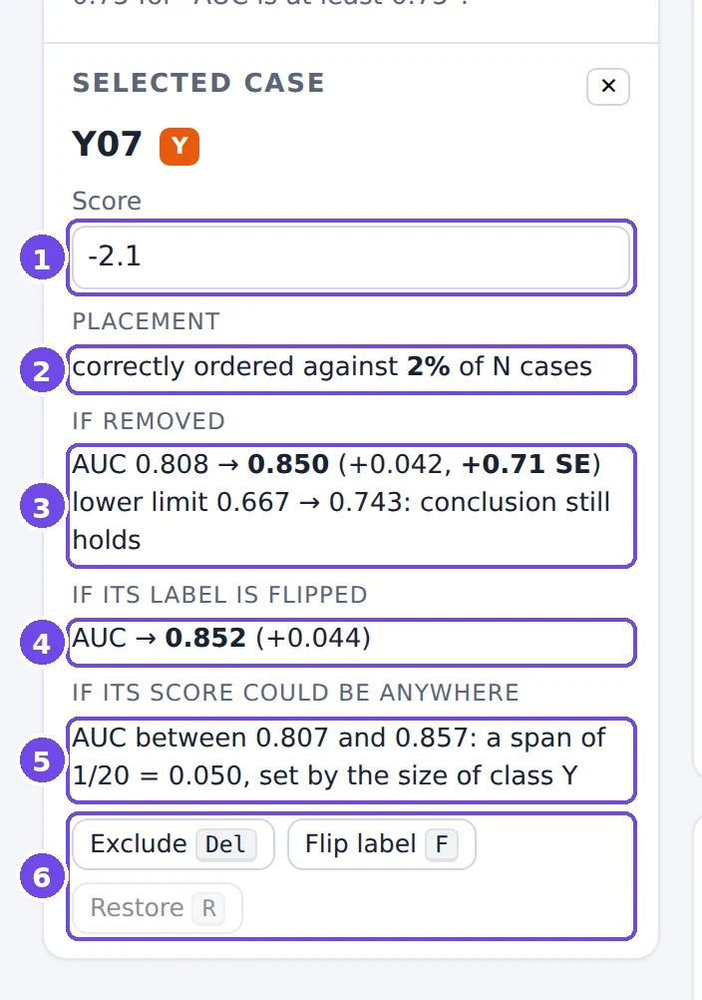
- Score: type a new value to move the case (the same as dragging it).
- Placement: Y07 is correctly ordered against only 2% of the N cases.
- If removed: the AUC would go from 0.808 to 0.850, +0.042 or +0.71 SE. The lower CI limit would rise from 0.667 to 0.743, and the conclusion (“lower limit > 0.5”) would still hold.
- If its label were flipped (Y07 treated as an N case): AUC 0.852.
- If its score could be anywhere: the AUC could range from 0.807 to 0.857. The span is 1/20, set by the size of class Y, whatever the case.
- Actions: Exclude/Include (Del), Flip label (F), Restore (R).
Check line 3 with the formula of §3.1: (AUC − V)/(nY − 1) = (0.808 − 0.017)/19 ≈ 0.042.
3.6 The ROC staircase
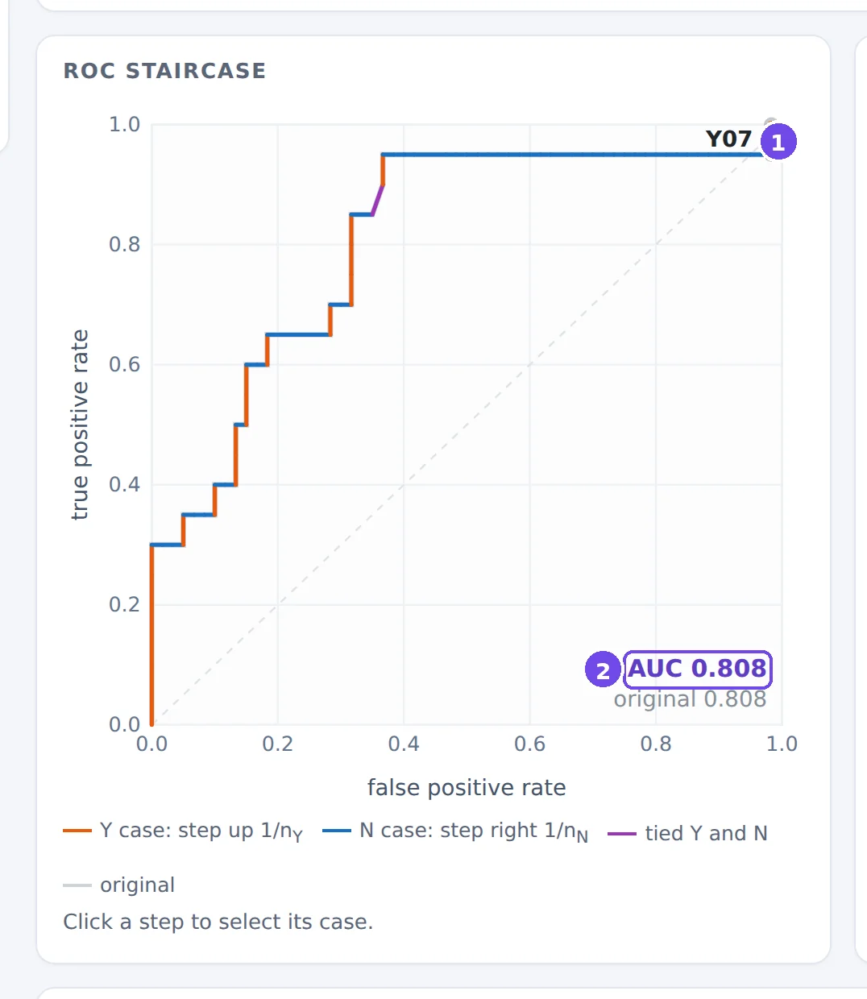
- Y07's step. Each Y case is an orange vertical step of 1/nY, each N case a blue horizontal step of 1/nN; tied Y and N cases form a purple diagonal. Y07 has the second-lowest score of all the cases, so its step comes almost at the end, at the right edge.
- Current and original AUC. After edits, the original ROC curve stays visible in grey.
The picture explains the leverage rule: a late vertical step adds little area, and moving it earlier would add a whole column of height 1/nY. Click any step to select its case.
3.7 Editing, and keeping track
There are three kinds of edit, and each is fully reversible:
- Exclude a case (Del, or the button): the case stays on the plot as a hollow circle but no longer counts.
- Flip its label (F): treat a Y case as N, or vice versa, as if it had been mislabelled.
- Move it (drag, or type a score): as if its score had been measured wrongly.
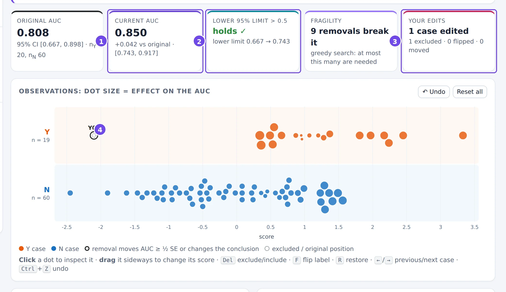
- Current AUC and its difference from the original.
- Conclusion now vs. originally, with both lower limits.
- Your edits, counted by type.
- Y07, excluded: a hollow dashed circle at its position.
Every edit is recorded in the edit log with the AUC and lower CI limit before and after, and can be undone (Ctrl+Z). You can export the log, and download the edited data with each case's effects, for a report.
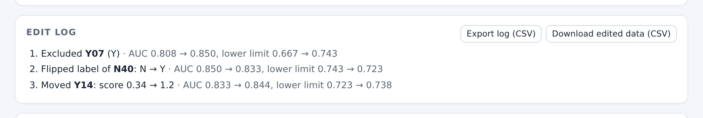
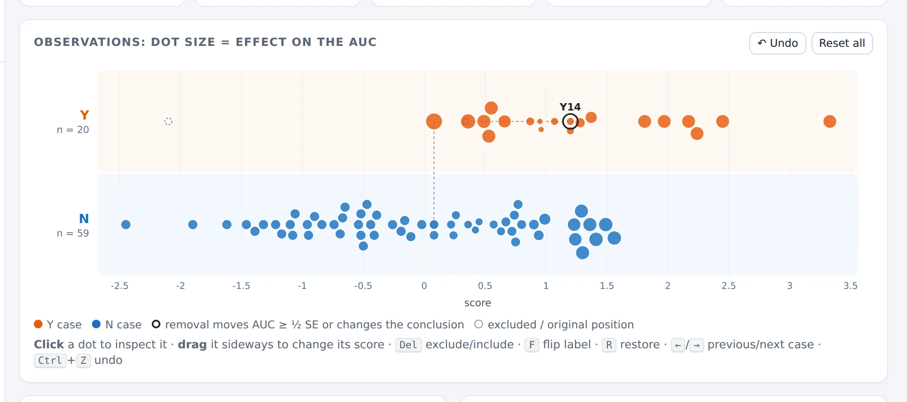
3.8 Conclusion, fragility and the sensitivity curve
Looking at cases one by one can be misleading: there is always a “most influential” case. The sensitivity curve puts your edits in context. Starting from the original data, it removes cases one at a time, each time choosing the removal that lowers the lower CI limit the most (red: most damaging) or raises it the most (green: most flattering).
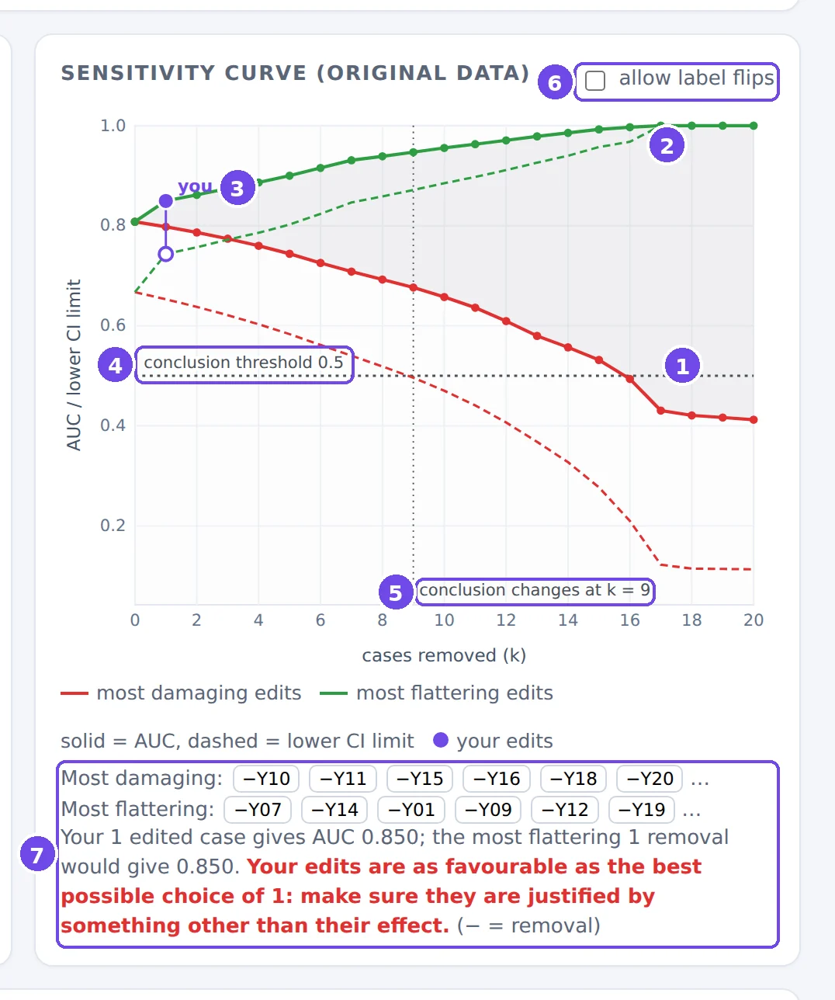
- Most damaging removals: the AUC (solid) and its lower CI limit (dashed) as k = 1, 2, 3… cases are removed.
- Most flattering removals. The grey band between the paths is everything that removing k cases could do to the AUC.
- You: your own edits (filled dot: AUC; hollow dot: lower limit), placed at k = the number of cases you edited.
- The conclusion threshold c₀.
- Fragility: the number of removals after which the conclusion changes, here 9.
- Allow label flips: let the search also flip labels.
- The removal sequences (click a case to select it), and a comparison of your edits with the best possible ones.
Here the “you” dot lies exactly on the green path: excluding Y07 is the most flattering single removal there is. The lab says so in red. That doesn't prove the exclusion is wrong; it means it needs a justification that is independent of its effect on the AUC (a documented lab error, for example).
Fragility is also shown in the summary boxes. If the conclusion holds, it is the number of removals that would break it; if it fails, it is the number that would create it. This second reading is a warning about cherry-picking. The search is greedy: it finds a set of k edits that works, so the true minimum can only be smaller. Read “k removals break it” as “at most k”.
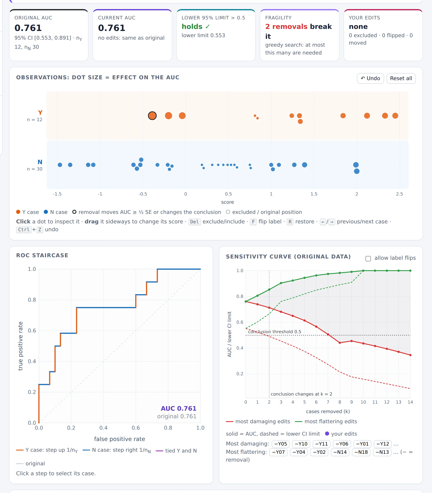
3.9 The table of all observations
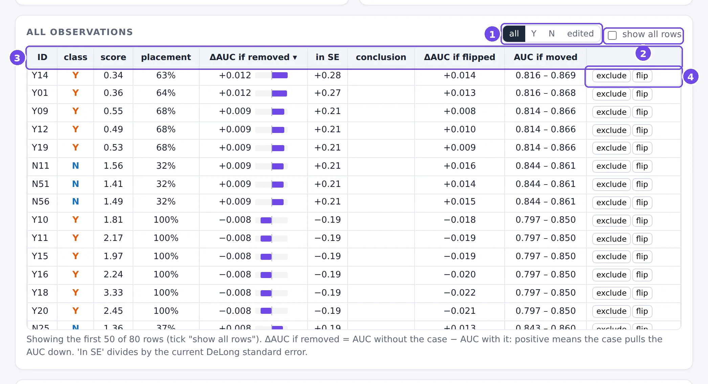
- Filter: all cases, only Y, only N, or only edited cases.
- Show all rows (by default the table shows the top 50).
- Column headers: click to sort, click again to reverse. Hover over a header for its definition.
- Per-row actions: exclude/include, flip, restore.
| Column | Meaning |
|---|---|
| placement | V: the share of the other class this case is correctly ordered against. |
| ΔAUC if removed | AUC without the case minus AUC with it. Positive: the case pulls the AUC down. Sorted by absolute value. |
| in SE | the same, divided by the current DeLong SE. |
| conclusion | breaks / creates if removing this one case would change the conclusion. |
| ΔAUC if flipped | the change if the case's label were the other class. |
| AUC if moved | the lowest and highest AUC reachable by moving only this case's score; the span is always 1/(class size). |
3.10 Worked examples
A visual outlier that hardly matters
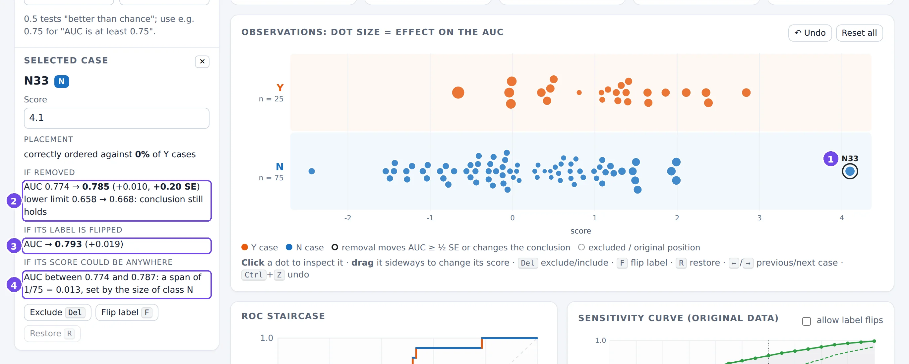
- N33, far to the right of every other N case.
- Removing it changes the AUC by only +0.010 (0.2 SE).
- Flipping its label, as if it were really a Y case, changes it by +0.019.
- Wherever its score were, the AUC could move by at most 1/75 = 0.013.
N33 is the case everybody notices, but it is 1 of 75 N cases. The influential cases are in the smaller Y class: sort the table by |ΔAUC| to see them.
A large class drawn as a density
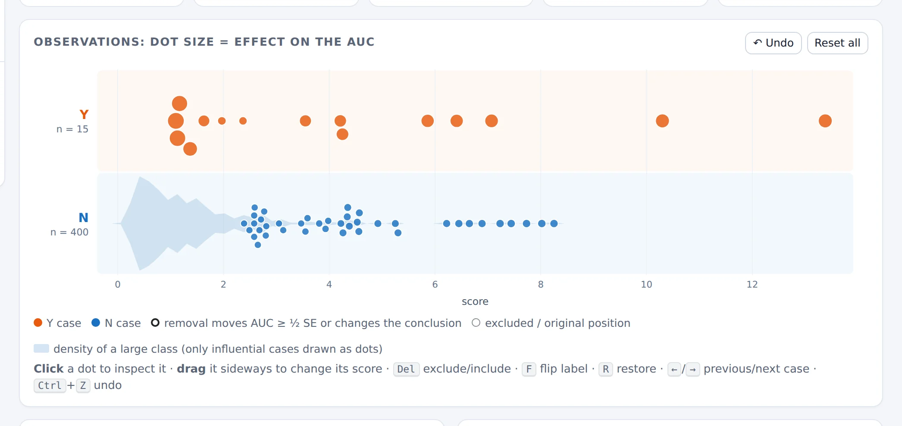
Every Y case carries 1/15 of the ROC height, every N case only 1/400 of its width: the largest effect of a Y case is more than ten times the largest effect of an N case. The most damaging path needs 10 removals to break the conclusion, and all 10 are Y cases.
Ties: a rating scale (real data)
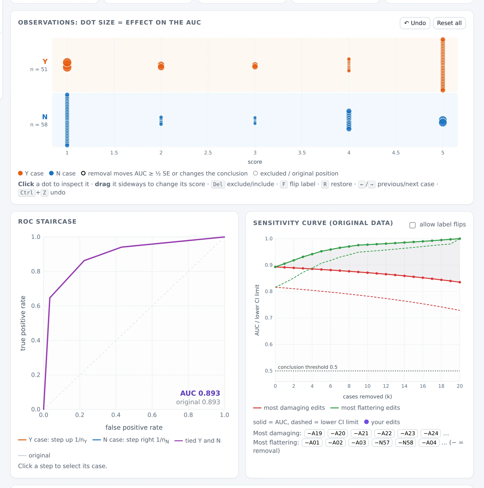
With only five distinct scores, cases stack in columns, every rating level contains both classes, and the ROC curve consists of diagonal segments (ties count ½). Cases with the same rating and class have identical effects. With 51 and 58 cases and an AUC of 0.893, the conclusion “better than chance” survives 20 removals.
3.11 Good practice
Removing observations because they lower the AUC biases the AUC upward, and the confidence interval computed afterwards is no longer valid: it ignores that the data were selected after looking at the result.
- Decide on exclusion criteria before looking at effects on the AUC, and apply them to every case alike.
- Report the original analysis, and any edited analysis alongside it, with the reasons. The exported edit log helps.
- Compare hand-picked edits with the sensitivity curve. If your edits are as favourable as the best possible choice, be suspicious of them.
- Report fragility alongside the CI: “lower limit 0.55; two removals would bring it below 0.5” is more honest than the interval alone.
- Look at the small class first. That is where single cases matter.
3.12 Exercises
A study has nY = 25 and AUC = 0.80. One Y case has placement 0.10. By how much does removing it change the AUC? What is the most that moving this case's score could change the AUC?
Answer
ΔAUC = (0.80 − 0.10)/24 ≈ +0.029. Moving it: from 0.80 − 0.10/25 = 0.796 up to 0.80 + 0.90/25 = 0.836; the span is 1/25 = 0.04.
Open “Suspected mislabelled control”. Find the three most influential cases in the table. Are any of them visual outliers?
Answer
The top of the table is Y cases with middling or low scores; N33 is far down the list. Influence is about rank and class size, not about how far a point is from its classmates.
Open “Fragile conclusion”. Which cases does the most damaging path remove first? Are they suspicious?
Answer
It removes the best-ranked Y cases (placement near 100%): removing good cases lowers the AUC. Nothing is wrong with them. Fragility measures how much a conclusion rests on a few cases; it doesn't identify bad data.
In any example, untick “Higher score means Y”. What happens to the AUC, the ROC staircase and the placement values?
Answer
The AUC becomes 1 − AUC, the staircase is rotated by 180°, and every placement value V becomes 1 − V. The lab warns that the AUC is below 0.5. The same data can give opposite-looking numbers if the direction is set wrongly.
In the Hanley & McNeil data, drag one Y case rated 1 to rating 5. Compare the change with the inspector's “if its score could be anywhere” range.
Answer
The AUC goes from 0.893 to 0.907 (+0.014). That is less than the theoretical maximum of 1/51 ≈ 0.020, because of ties: rated 1, the case already got half credit against the 33 N cases rated 1, and rated 5 it still ties with the 2 N cases rated 5. A single reader error matters little with 51 Y cases.
4. Using the tools together
In the Simulator, the button Inspect this sample in the Robustness lab ↗ opens the current simulated sample in the lab, in a new tab. The link carries the recipe (distributions, sample sizes, seed), and the lab regenerates exactly the same sample, so the AUC and CI match to the last digit.
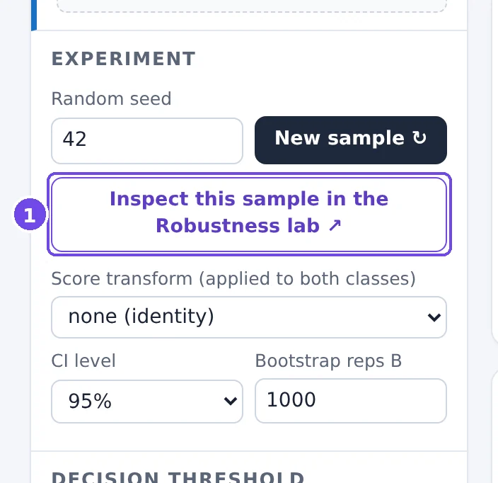
- Opens this exact sample in the Robustness lab.
Because the data are simulated, the lab knows the true AUC and shows it as a dashed line on the sensitivity curve and the ROC staircase. This makes a point that real data can't make: every case in a simulated sample is a legitimate draw, so nothing is wrong with any of them. Yet the lab still finds “most influential” cases, and removing them moves the AUC in whichever direction you choose, not towards the truth.
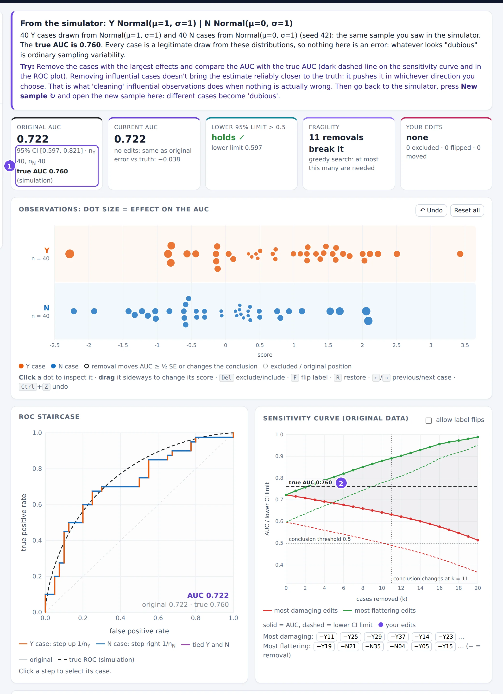
- The true AUC of the simulation, next to the original sample AUC.
- The true AUC on the sensitivity curve: the red and green paths move the estimate away from it as easily as towards it.
In the Simulator, open the textbook scenario with 20 Y and 20 N cases and send the sample to the lab. Note the most influential case. Back in the Simulator, press New sample ↻ and send it again; repeat a few times. Is there always a case that looks “dubious”? What does that tell you about judging individual observations by their effect?
Answer
Every sample has cases with large effects: typically Y cases with low scores or N cases with high scores. Their size is similar from sample to sample, although nothing is wrong with any of them. Before calling an observation dubious, compare its effect with what ordinary sampling produces, and look for a reason outside the AUC.
5. Reference
Formulas
| Quantity | Formula |
|---|---|
| Sample AUC | (1/(nYnN)) Σi∈Y Σj∈N ψ(si, sj), ψ = 1 if si > sj, ½ if equal, 0 otherwise |
| Binormal AUC | Φ((μY − μN) / √(σY² + σN²)) |
| Placement values | Vi = (1/nN) Σj ψ(si, sj) for Y case i; Vj = (1/nY) Σi ψ(si, sj) for N case j |
| DeLong variance | Var(AUC) ≈ s²(VY)/nY + s²(VN)/nN |
| Logit-scale CI | logit(AUC) ± z · SE / (AUC(1 − AUC)), mapped back with the inverse logit |
| Removing one case | ΔAUC = (AUC − V)/(n − 1), n = size of the case's class |
| Moving one case | AUC ∈ [AUC − V/n, AUC + (1 − V)/n] |
| PPV from sens, spec, prevalence π | sens·π / (sens·π + (1 − spec)(1 − π)) |
| Youden's J | sensitivity + specificity − 1 |
Glossary
- AUC
- Area under the ROC curve; the probability that a random Y case scores higher than a random N case (ties ½).
- Bootstrap
- Estimating sampling variability by resampling the observed data with replacement (here: each class separately).
- Calibration
- Whether score values match observed risks. Not measured by the AUC.
- Confidence interval
- A range produced by a procedure that contains the true value in a stated share (e.g. 95%) of repeated studies.
- Coverage
- The actual share of intervals that contain the truth; checked by simulation.
- DeLong method
- An analytic estimate of the AUC's variance from the placement values.
- Fragility
- The number of observations whose removal (or relabelling) changes a conclusion.
- FPR
- False positive rate, P(S ≥ t | N) = 1 − specificity.
- Monte-Carlo error
- Uncertainty of a simulation result due to the finite number of simulated studies.
- Operating point
- The (FPR, TPR) pair for a chosen threshold.
- Placement value
- The share of the other class that a case is correctly ordered against.
- Power
- The probability that a study reaches a given conclusion (here: a CI entirely above 0.5) when it is true.
- PPV / NPV
- Positive / negative predictive value: the share of flagged (unflagged) cases that really are Y (N). They depend on the prevalence.
- Prevalence
- The share of Y cases, nY/(nY + nN) in a sample.
- ROC curve
- TPR against FPR over all thresholds.
- Sensitivity analysis
- Checking how much a result changes under reasonable alternative choices, as opposed to choosing the alternative that gives the best result.
- Sensitivity / specificity
- TPR = P(S ≥ t | Y); specificity = P(S < t | N).
- Youden's J
- Sensitivity + specificity − 1; its maximum over thresholds is the largest vertical distance of the ROC curve above the diagonal.
Further reading
- Fawcett T. An introduction to ROC analysis. Pattern Recognition Letters 2006; 27(8): 861–874. A readable general introduction.
- Hanley JA, McNeil BJ. The meaning and use of the area under a receiver operating characteristic (ROC) curve. Radiology 1982; 143(1): 29–36. The AUC as a probability; source of the CT rating example.
- DeLong ER, DeLong DM, Clarke-Pearson DL. Comparing the areas under two or more correlated receiver operating characteristic curves: a nonparametric approach. Biometrics 1988; 44(3): 837–845.
- Sun X, Xu W. Fast implementation of DeLong's algorithm for comparing the areas under correlated receiver operating characteristic curves. IEEE Signal Processing Letters 2014; 21(11): 1389–1393.
- Pepe MS. The Statistical Evaluation of Medical Tests for Classification and Prediction. Oxford University Press, 2003.
- Efron B, Tibshirani RJ. An Introduction to the Bootstrap. Chapman & Hall, 1993.
- Hand DJ. Measuring classifier performance: a coherent alternative to the area under the ROC curve. Machine Learning 2009; 77: 103–123. A critique of the AUC as a single performance measure.
- Walsh M, et al. The statistical significance of randomized controlled trial results is frequently fragile: a case for a Fragility Index. Journal of Clinical Epidemiology 2014; 67(6): 622–628. The idea behind the lab's fragility count.